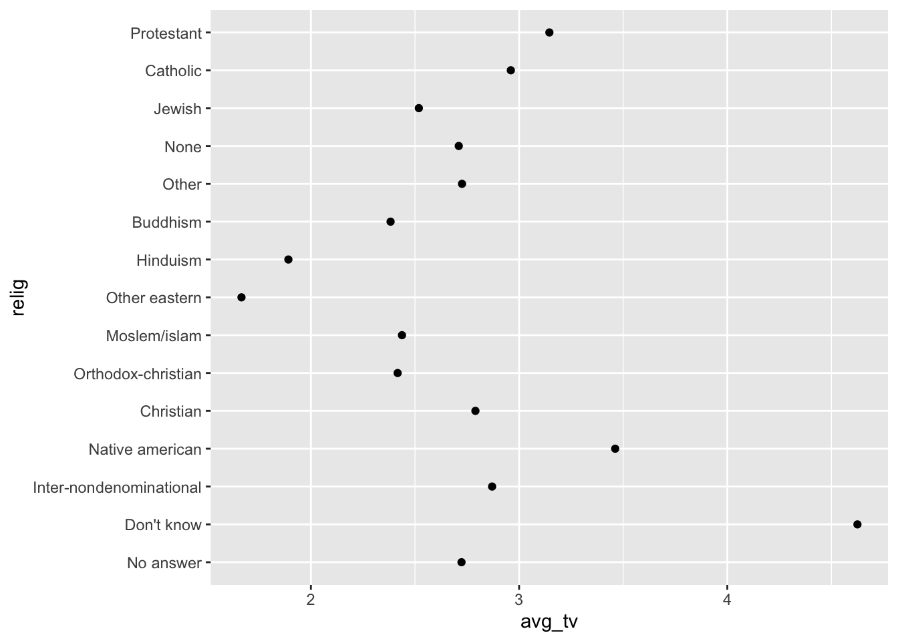
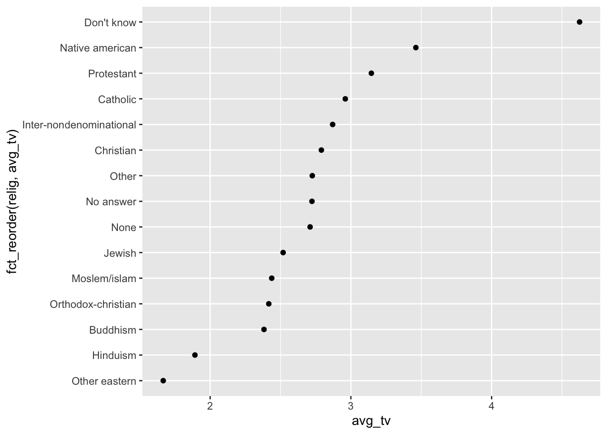
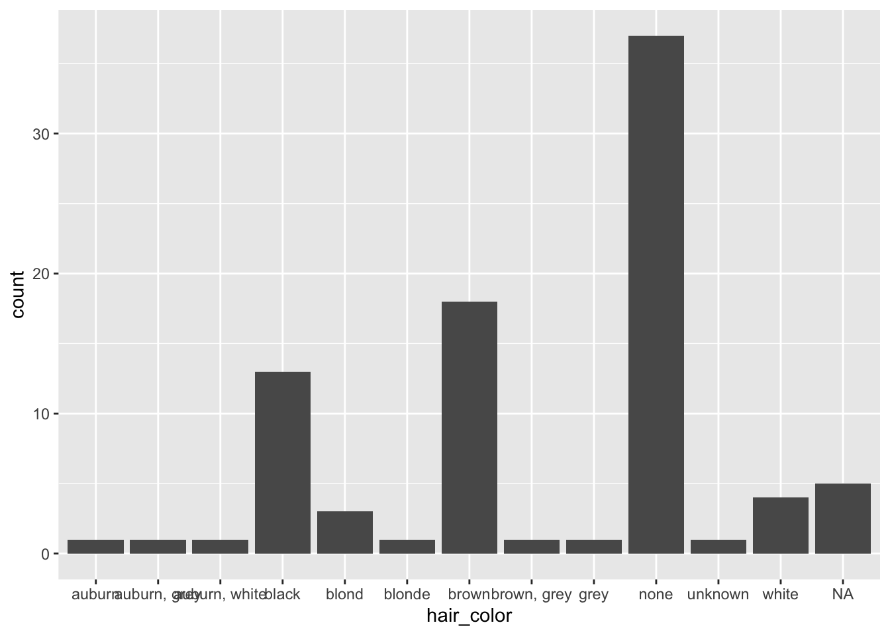
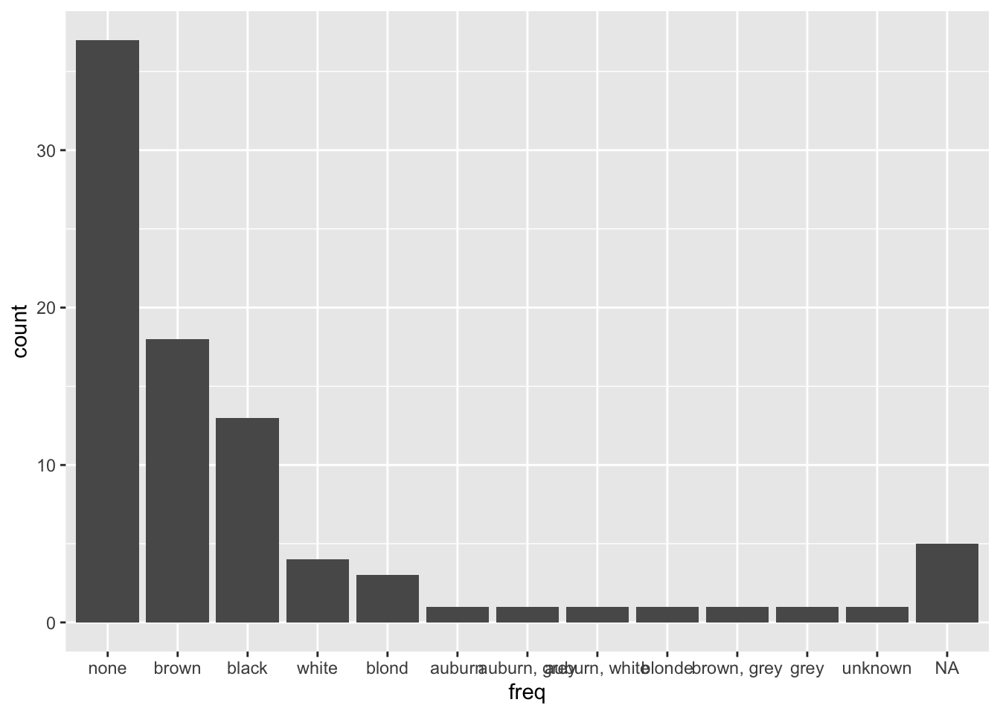
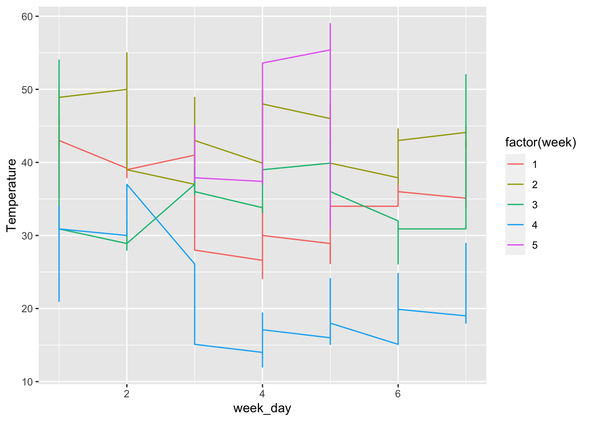

4 08.11.21 tidyverse mit stringr, forcats, lubridate
library("tidyverse")4.1 stringr-Paket
paar Beispielstrings kreieren
string1 <- "Hello"
string2 <- "Bye"
mu <- "\u03BC" # mathematisches Zeichen mu
char_vector <- c(string1,string2, mu)
char_vector## [1] "Hello" "Bye" "μ"4.1.1 str_length()
Nutzen für Länge von Strings
str_length(char_vector)## [1] 5 3 14.1.2 str_c()
Kombinieren von Strings
str_c(string1,string2, sep = "|")## [1] "Hello|Bye"4.1.3 str_sub()
zum Subsetten
x <- c("apple", "banana", "pears")
str_sub(x,start= 1,end= 3)## [1] "app" "ban" "pea"#überschreiben der 2- 4 buchstaben als Großbuchstaben
str_sub(x,start= 2,end= 4) <- str_to_upper(str_sub(x,2,4))
x## [1] "aPPLe" "bANAna" "pEARs"4.1.4 str_sort()
Sortieren
str_sort(x, locale = "en", decreasing = T )## [1] "pEARs" "bANAna" "aPPLe"4.1.5 str_view()
Regex Muster erkennen und markieren
str_view(x, pattern = "A")wichtigste RegExs im stringrcheatsheet !
4.1.6 str_detect()
RegEx Muster herausfiltern
words[str_detect(words, "^y")] # alle wörter die mit m anfangen## [1] "year" "yes" "yesterday" "yet"
## [5] "you" "young"sum(str_detect(words, "[aeiou]$")) # wörter mit vokal am ende## [1] 271words[!str_detect(words, "[aeiou]")] #wörter ohne vokal## [1] "by" "dry" "fly" "mrs" "try" "why"4.1.7 str_count()
mean(str_count(words, "[aeiou]")) #durschnitt vokale pro wort## [1] 1.9918374.1.8 beispiel
df <- tibble(word = words, i = seq_along(word))
head(df)## # A tibble: 6 × 2
## word i
## <chr> <int>
## 1 a 1
## 2 able 2
## 3 about 3
## 4 absolute 4
## 5 accept 5
## 6 account 6df %>%
mutate(vokale = str_count(word, "[aeiou]"), konsonanten = str_count(word, "[^aeiou]"))## # A tibble: 980 × 4
## word i vokale konsonanten
## <chr> <int> <int> <int>
## 1 a 1 1 0
## 2 able 2 2 2
## 3 about 3 3 2
## 4 absolute 4 4 4
## 5 accept 5 2 4
## 6 account 6 3 4
## 7 achieve 7 4 3
## 8 across 8 2 4
## 9 act 9 1 2
## 10 active 10 3 3
## # … with 970 more rows4.1.9 regex() funktion
statt patterns sind auch regex-matches mithilfe der regex() funktion möglich
ban <- c("Banana", "banana", "BANANA")
ban %>%
str_view(regex("banana"))4.2 forcats
nützliches Paket zur Arbeit mit Faktoren
# library(forcats)
string <- c("Dez", "Jan", "Feb", "Apr")
sort(string)## [1] "Apr" "Dez" "Feb" "Jan"merke: hier wird nach Alphabet sortiert
monate_level <- c(
"Jan", "Feb", "Mär", "Apr", "Jun", "Jul", "Aug", "Sep", "Okt", "Nov", "Dez"
)4.2.1 factor()
Kodieren mit Faktoren
faktor <- factor(string, monate_level)
sort(faktor) # sortierung der Monate nach Faktoren## [1] Jan Feb Apr Dez
## 11 Levels: Jan Feb Mär Apr Jun Jul Aug Sep Okt ... Dezmerke: zur Sortierung nach Level factor benutzen
4.2.2 Beispiel Einsatz
gss_cat # Datensatz## # A tibble: 21,483 × 9
## year marital age race rincome partyid relig denom
## <int> <fct> <int> <fct> <fct> <fct> <fct> <fct>
## 1 2000 Never … 26 White $8000 … Ind,ne… Prot… Sout…
## 2 2000 Divorc… 48 White $8000 … Not st… Prot… Bapt…
## 3 2000 Widowed 67 White Not ap… Indepe… Prot… No d…
## 4 2000 Never … 39 White Not ap… Ind,ne… Orth… Not …
## 5 2000 Divorc… 25 White Not ap… Not st… None Not …
## 6 2000 Married 25 White $20000… Strong… Prot… Sout…
## 7 2000 Never … 36 White $25000… Not st… Chri… Not …
## 8 2000 Divorc… 44 White $7000 … Ind,ne… Prot… Luth…
## 9 2000 Married 44 White $25000… Not st… Prot… Other
## 10 2000 Married 47 White $25000… Strong… Prot… Sout…
## # … with 21,473 more rows, and 1 more variable:
## # tvhours <int>sortieren nach religion
relig <- gss_cat %>%
group_by(relig) %>%
summarize(
avg_age = mean(age, na.rm=T),
avg_tv = mean(tvhours, na.rm = T),
n = n(),
)
ggplot(relig, aes(avg_tv, relig)) +
geom_point()
merke: plot ist unübersichtlich, deswegen jetzt anwendung factors
ggplot(relig, aes(avg_tv, fct_reorder(relig, avg_tv))) +
geom_point()
=> jetzt isses schön sortiert mit fct_reorder möglicher Einsatz auch von fct_recode zur Umbenennung von Faktoren
gss_cat %>%
mutate(race = fct_recode(race,
"Anders"= "Other",
"Weiß" = "White",
"Schwarz" = "Black"
))## # A tibble: 21,483 × 9
## year marital age race rincome partyid relig denom
## <int> <fct> <int> <fct> <fct> <fct> <fct> <fct>
## 1 2000 Never … 26 Weiß $8000 … Ind,ne… Prot… Sout…
## 2 2000 Divorc… 48 Weiß $8000 … Not st… Prot… Bapt…
## 3 2000 Widowed 67 Weiß Not ap… Indepe… Prot… No d…
## 4 2000 Never … 39 Weiß Not ap… Ind,ne… Orth… Not …
## 5 2000 Divorc… 25 Weiß Not ap… Not st… None Not …
## 6 2000 Married 25 Weiß $20000… Strong… Prot… Sout…
## 7 2000 Never … 36 Weiß $25000… Not st… Chri… Not …
## 8 2000 Divorc… 44 Weiß $7000 … Ind,ne… Prot… Luth…
## 9 2000 Married 44 Weiß $25000… Not st… Prot… Other
## 10 2000 Married 47 Weiß $25000… Strong… Prot… Sout…
## # … with 21,473 more rows, and 1 more variable:
## # tvhours <int>weitere wichtige Funktionen: - fct_collapse zum Zusammenfassen von Merkmalen - fct_lump auch Zusammenfassen irgendwie
4.3 lubridate
Paket zum Zeiten und Daten(Kalender)-Wrangeln
Arten von Zeit: time, date, datetime
now()## [1] "2022-02-03 10:32:40 CET"today()## [1] "2022-02-03"library(lubridate)Wege, dates/times zu generieren:
- Strings
- individuelle Datetime komponenten
- aus vorhandenen Komponenten
4.3.1 1.ymd(), mdy(), dmy_hms()
aus string mit lubridate
dmy("14th September 2024")## [1] "2024-09-14"ymd("2021, December, 21")## [1] "2021-12-21"mdy(122108)## [1] "2008-12-21"ymd_hms("21 September 08 13:54:33")## [1] "2021-09-08 13:54:33 UTC"4.3.2 2. make_date()
library(nycflights13)
head(flights)## # A tibble: 6 × 19
## year month day dep_time sched_dep_time dep_delay
## <int> <int> <int> <int> <int> <dbl>
## 1 2013 1 1 517 515 2
## 2 2013 1 1 533 529 4
## 3 2013 1 1 542 540 2
## 4 2013 1 1 544 545 -1
## 5 2013 1 1 554 600 -6
## 6 2013 1 1 554 558 -4
## # … with 13 more variables: arr_time <int>,
## # sched_arr_time <int>, arr_delay <dbl>,
## # carrier <chr>, flight <int>, tailnum <chr>,
## # origin <chr>, dest <chr>, air_time <dbl>,
## # distance <dbl>, hour <dbl>, minute <dbl>,
## # time_hour <dttm>flights %>%
dplyr::select(year,month, day, hour, minute) %>%
mutate(
departure = make_datetime(year, month, day, hour, minute),
date = make_date(year,month,day)
)## # A tibble: 336,776 × 7
## year month day hour minute departure
## <int> <int> <int> <dbl> <dbl> <dttm>
## 1 2013 1 1 5 15 2013-01-01 05:15:00
## 2 2013 1 1 5 29 2013-01-01 05:29:00
## 3 2013 1 1 5 40 2013-01-01 05:40:00
## 4 2013 1 1 5 45 2013-01-01 05:45:00
## 5 2013 1 1 6 0 2013-01-01 06:00:00
## 6 2013 1 1 5 58 2013-01-01 05:58:00
## 7 2013 1 1 6 0 2013-01-01 06:00:00
## 8 2013 1 1 6 0 2013-01-01 06:00:00
## 9 2013 1 1 6 0 2013-01-01 06:00:00
## 10 2013 1 1 6 0 2013-01-01 06:00:00
## # … with 336,766 more rows, and 1 more variable:
## # date <date>4.3.3 3.aus vorhandenene datetimes
today()## [1] "2022-02-03"as_datetime(today()) ## [1] "2022-02-03 UTC"weiter fancy sachen
datetime <- ymd_hms("20200914 151623")
month(datetime) #ausgabe monat## [1] 9#ausgabe wochentag mit Parameter Montag als Anfang und Ausgabe des Namens
wday(datetime, week_start = getOption("lubridate.week.start" , 1), label = T) #ein montag## [1] Mon
## 7 Levels: Mon < Tue < Wed < Thu < Fri < ... < Sunyday(datetime) #258 tag des jahres## [1] 2584.4 Aufgabenblatt 3
4.4.1 Aufgabe 1
load("data/starwars.RData")starwars %>%
dplyr::select(hair_color, skin_color, eye_color) %>%
summarize(
h_length = mean(str_length(hair_color), na.rm = T),
s_length = mean(str_length(skin_color), na.rm = T),
e_length = mean(str_length(eye_color), na.rm = T),
h_sd= sd(str_length(hair_color), na.rm = T),
s_sd = sd(str_length(skin_color), na.rm = T),
e_sd = sd(str_length(eye_color), na.rm = T),
)## # A tibble: 1 × 6
## h_length s_length e_length h_sd s_sd e_sd
## <dbl> <dbl> <dbl> <dbl> <dbl> <dbl>
## 1 4.84 5.97 5.10 1.54 3.47 1.40starwars %>%
mutate(hair_color = str_c("hair_color", hair_color, sep = ":"))## # A tibble: 87 × 16
## name height mass hair_color skin_color eye_color
## <chr> <int> <dbl> <chr> <chr> <chr>
## 1 Luke S… 172 77 hair_color… fair blue
## 2 C-3PO 167 75 <NA> gold yellow
## 3 R2-D2 96 32 <NA> white, bl… red
## 4 Darth … 202 136 hair_color… white yellow
## 5 Leia O… 150 49 hair_color… light brown
## 6 Owen L… 178 120 hair_color… light blue
## 7 Beru W… 165 75 hair_color… light blue
## 8 R5-D4 97 32 <NA> white, red red
## 9 Biggs … 183 84 hair_color… light brown
## 10 Obi-Wa… 182 77 hair_color… fair blue-gray
## # … with 77 more rows, and 10 more variables:
## # birth_year <dbl>, sex <chr>, gender <chr>,
## # homeworld <chr>, species <chr>, films <list>,
## # vehicles <list>, starships <list>,
## # star_string <chr>, films_low <chr>starwars %>%
unite(hair_color, eye_color, sep = " and ", col="combined")## # A tibble: 87 × 15
## name height mass combined skin_color birth_year
## <chr> <int> <dbl> <chr> <chr> <dbl>
## 1 Luke S… 172 77 blond and… fair 19
## 2 C-3PO 167 75 NA and ye… gold 112
## 3 R2-D2 96 32 NA and red white, bl… 33
## 4 Darth … 202 136 none and … white 41.9
## 5 Leia O… 150 49 brown and… light 19
## 6 Owen L… 178 120 brown, gr… light 52
## 7 Beru W… 165 75 brown and… light 47
## 8 R5-D4 97 32 NA and red white, red NA
## 9 Biggs … 183 84 black and… light 24
## 10 Obi-Wa… 182 77 auburn, w… fair 57
## # … with 77 more rows, and 9 more variables: sex <chr>,
## # gender <chr>, homeworld <chr>, species <chr>,
## # films <list>, vehicles <list>, starships <list>,
## # star_string <chr>, films_low <chr>#oder
starwars %>%
mutate(combined2 = str_c(hair_color,eye_color, sep = " and "))## # A tibble: 87 × 17
## name height mass hair_color skin_color eye_color
## <chr> <int> <dbl> <chr> <chr> <chr>
## 1 Luke Sk… 172 77 blond fair blue
## 2 C-3PO 167 75 <NA> gold yellow
## 3 R2-D2 96 32 <NA> white, bl… red
## 4 Darth V… 202 136 none white yellow
## 5 Leia Or… 150 49 brown light brown
## 6 Owen La… 178 120 brown, gr… light blue
## 7 Beru Wh… 165 75 brown light blue
## 8 R5-D4 97 32 <NA> white, red red
## 9 Biggs D… 183 84 black light brown
## 10 Obi-Wan… 182 77 auburn, w… fair blue-gray
## # … with 77 more rows, and 11 more variables:
## # birth_year <dbl>, sex <chr>, gender <chr>,
## # homeworld <chr>, species <chr>, films <list>,
## # vehicles <list>, starships <list>,
## # star_string <chr>, films_low <chr>, combined2 <chr>Option2 macht wenn in einer Zelle NA ist, automatisch das Ergebnis NA, Option1 verbindet das miteinander
starwars %>%
mutate(short_hair = str_sub(hair_color, end = 2)) ## # A tibble: 87 × 17
## name height mass hair_color skin_color eye_color
## <chr> <int> <dbl> <chr> <chr> <chr>
## 1 Luke Sk… 172 77 blond fair blue
## 2 C-3PO 167 75 <NA> gold yellow
## 3 R2-D2 96 32 <NA> white, bl… red
## 4 Darth V… 202 136 none white yellow
## 5 Leia Or… 150 49 brown light brown
## 6 Owen La… 178 120 brown, gr… light blue
## 7 Beru Wh… 165 75 brown light blue
## 8 R5-D4 97 32 <NA> white, red red
## 9 Biggs D… 183 84 black light brown
## 10 Obi-Wan… 182 77 auburn, w… fair blue-gray
## # … with 77 more rows, and 11 more variables:
## # birth_year <dbl>, sex <chr>, gender <chr>,
## # homeworld <chr>, species <chr>, films <list>,
## # vehicles <list>, starships <list>,
## # star_string <chr>, films_low <chr>,
## # short_hair <chr>starwars <- starwars %>%
mutate(
star_string = str_c(
name, hair_color, eye_color, skin_color, homeworld, films, vehicles, starships, sep = ","),
films_low = str_to_lower(films)
)## Warning in stri_c(..., sep = sep, collapse = collapse,
## ignore_null = TRUE): argument is not an atomic vector;
## coercing
## Warning in stri_c(..., sep = sep, collapse = collapse,
## ignore_null = TRUE): argument is not an atomic vector;
## coercing
## Warning in stri_c(..., sep = sep, collapse = collapse,
## ignore_null = TRUE): argument is not an atomic vector;
## coercing## Warning in stri_trans_tolower(string, locale = locale):
## argument is not an atomic vector; coercingstarwars %>%
mutate(films_low = str_remove(films_low, "c") )## # A tibble: 87 × 16
## name height mass hair_color skin_color eye_color
## <chr> <int> <dbl> <chr> <chr> <chr>
## 1 Luke Sk… 172 77 blond fair blue
## 2 C-3PO 167 75 <NA> gold yellow
## 3 R2-D2 96 32 <NA> white, bl… red
## 4 Darth V… 202 136 none white yellow
## 5 Leia Or… 150 49 brown light brown
## 6 Owen La… 178 120 brown, gr… light blue
## 7 Beru Wh… 165 75 brown light blue
## 8 R5-D4 97 32 <NA> white, red red
## 9 Biggs D… 183 84 black light brown
## 10 Obi-Wan… 182 77 auburn, w… fair blue-gray
## # … with 77 more rows, and 10 more variables:
## # birth_year <dbl>, sex <chr>, gender <chr>,
## # homeworld <chr>, species <chr>, films <list>,
## # vehicles <list>, starships <list>,
## # star_string <chr>, films_low <chr>starwars[str_detect(starwars$name, "[:0-9]"), ]## # A tibble: 6 × 16
## name height mass hair_color skin_color eye_color
## <chr> <int> <dbl> <chr> <chr> <chr>
## 1 C-3PO 167 75 <NA> gold yellow
## 2 R2-D2 96 32 <NA> white, blue red
## 3 R5-D4 97 32 <NA> white, red red
## 4 IG-88 200 140 none metal red
## 5 R4-P17 96 NA none silver, red red, blue
## 6 BB8 NA NA none none black
## # … with 10 more variables: birth_year <dbl>,
## # sex <chr>, gender <chr>, homeworld <chr>,
## # species <chr>, films <list>, vehicles <list>,
## # starships <list>, star_string <chr>,
## # films_low <chr>sum(str_detect(starwars$homeworld, "[ment]$"), na.rm = T)## [1] 28starwars[str_detect(starwars$starships, 'Millennium\\sFalcon'), ]## Warning in stri_detect_regex(string, pattern, negate =
## negate, opts_regex = opts(pattern)): argument is not an
## atomic vector; coercing## # A tibble: 4 × 16
## name height mass hair_color skin_color eye_color
## <chr> <int> <dbl> <chr> <chr> <chr>
## 1 Chewbacca 228 112 brown unknown blue
## 2 Han Solo 180 80 brown fair brown
## 3 Lando Ca… 177 79 black dark brown
## 4 Nien Nunb 160 68 none grey black
## # … with 10 more variables: birth_year <dbl>,
## # sex <chr>, gender <chr>, homeworld <chr>,
## # species <chr>, films <list>, vehicles <list>,
## # starships <list>, star_string <chr>,
## # films_low <chr>4.4.2 Aufgabe 2
hair_factor <- as.factor(starwars$hair_color)
hair_factor <- tibble(hair_color = hair_factor)
ggplot(hair_factor, aes(hair_color)) + geom_bar() #plot original
freq <- fct_infreq(hair_factor$hair_color)
ggplot(hair_factor, aes(freq)) + geom_bar()
levels(hair_factor)## NULLhair_factor %>%
mutate(hair_color = fct_collapse(hair_color, brown = c("auburn", "auburn, grey", "auburn, white"))) %>%
count(hair_color)## # A tibble: 10 × 2
## hair_color n
## <fct> <int>
## 1 brown 21
## 2 black 13
## 3 blond 3
## 4 blonde 1
## 5 brown, grey 1
## 6 grey 1
## 7 none 37
## 8 unknown 1
## 9 white 4
## 10 <NA> 5freq2 <- fct_infreq(factor(starwars$eye_color))
freq2 <- fct_lump(freq2, 6) #erste sechs als eigene , alles andere als "Other" zusammenfassen
fct_count(freq2)## # A tibble: 7 × 2
## f n
## <fct> <int>
## 1 brown 21
## 2 blue 19
## 3 yellow 11
## 4 black 10
## 5 orange 8
## 6 red 5
## 7 Other 134.4.3 Aufgabe 3
#install.packages("devtools")
library(devtools)
#install_github("Ram-N/weatherData")
library(weatherData)
newyork <- NewYork2013
library(lubridate)newyork$Time <- as_datetime(newyork$Time)
newyork$date <- date(newyork$Time)
newyork$year <- year(newyork$Time)
newyork$month <- month(newyork$Time)
newyork$day <- day(newyork$Time)
newyork$week <- week(newyork$Time)
newyork$year_day <- yday(newyork$Time)
newyork$week_day <- wday(newyork$Time)
newyork$hour <- hour(newyork$Time)
newyork[322,]## Time Temperature date year
## 322 2013-01-13 01:47:00 42.8 2013-01-13 2013
## month day week year_day week_day hour
## 322 1 13 2 13 1 1filtered_newyork <- newyork %>% filter(month == 1, hour > 1)
ggplot(filtered_newyork, aes(x = week_day, y = Temperature, colour = factor(week))) + geom_line()